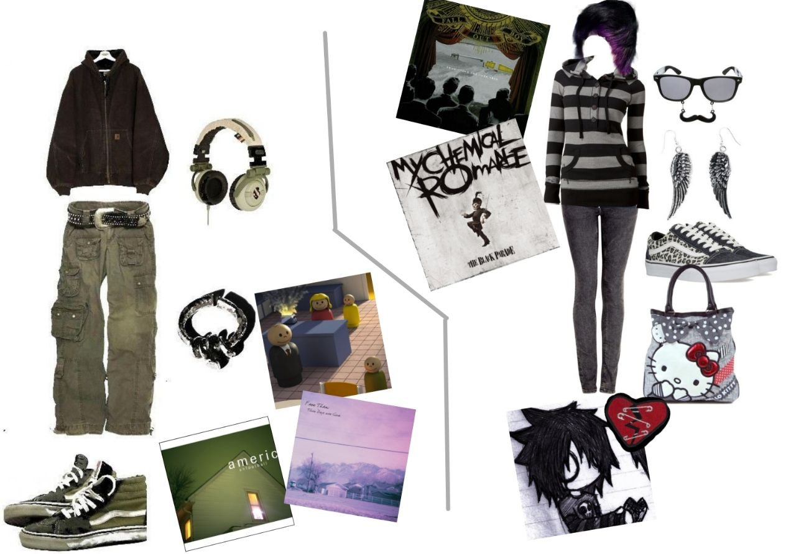

В наше время при слове "эмо" каждый человек представит себе типичного эмобоя - черно-розовые волосы и одежда, блейзер и тяжелая кричащая музыка ("screamo" - scream + emo), однако в первую очередь эмо - это опять же музыкальный жанр. Традиционно эмо делятся на первую и вторую волны. Первая Волна начала формироваться в конце 80х на традиционном жанре emo - мелодичность, высокая перепады скорости и сожаления о прошлом, настоящем и часто о будущем. В то время внешне эмо внешне и поведенчески практически не выделялись? за исключением повышенной сентиментальности, и в основном собирались небольшими компаниями чтобы вместе потосковать о былых днях отрочества, молодости. Пиком Первой Волны можно назвать фотографию дома с главной страницы сайта - это дом с обложки культового одногоименного эмо-альбома группы American Football. Этот альбом был самым мелодичным и мечтательным из всех предшествующих, но также были популярны группы Sunny Day Real Estate, Weezer, Mineral. Вторая Волна появилась в начале 00х на волне нового и успешного жанра поп-панк (популярный пример - группа Пошлая Молли). Эта энергетика вдохнула в субкультуру новое дыхание и как раз таки начали появляться типичные эмобои - кричащие о помощи подростки в черно-розовых тонах. Пик эмо-культуры пришелся на 2007 год из-за наиболее благоприятных экономических и политических ситуаций в мире, после 2007 же года эмо начали стремительно исчезать как в России, так и во всем мире. Наибольшую популярность в этой волне приобрели такие группы как My Chemical Romance, Green Day, а в России - тяжелая группа Стигмата В настоящее время снова начала набирать популярность Первая Волна Эмо.
Полная история эмо
Мат-рок и мидвест-эмо - самые красивые жанры эмо